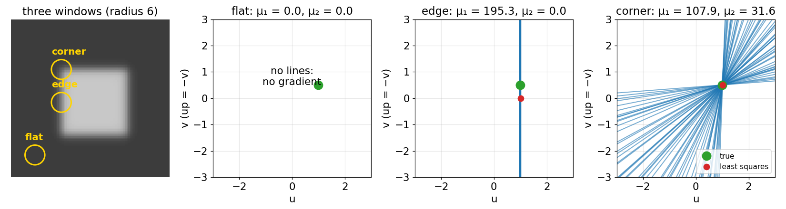
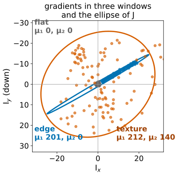
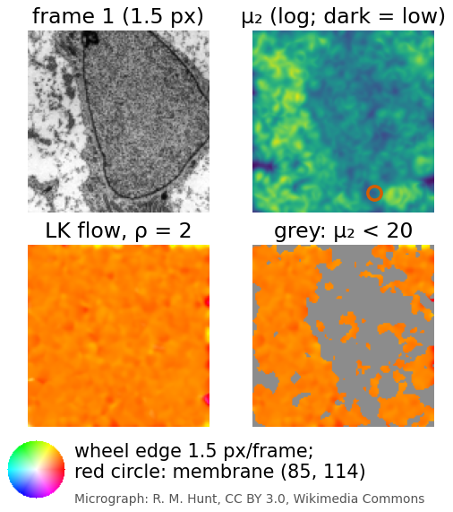
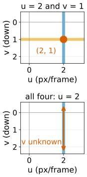
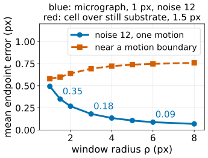
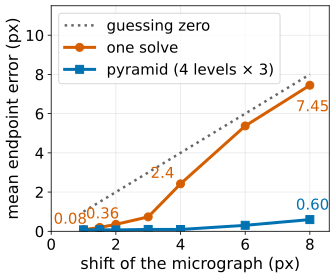
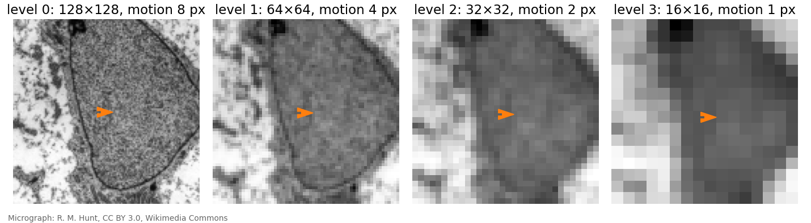

Lucas–Kanade: local least squares, the structure tensor, and pyramids
Image analysis
About this lecture
Last unit: each pixel gives one constraint line in velocity space; one line is not enough (the aperture problem). Today, the classic local answer (Lucas and Kanade, 1981).
Assume the flow is constant in a small window; take the velocity closest to all the window’s lines.
Its 2\times2 matrix is the structure tensor of the edges day: flat, edge and corner tell us where flow can be measured.
The window size trade-off.
Large motion breaks the linearisation: warping and coarse-to-fine pyramids fix it.
Block matching for comparison, and tracking points as a pointer.
Slides titled The math give the formulas and proofs; the ideas are complete without them.
The idea: one velocity per window

Assume all pixels in a small window move together. Each pixel contributes a line; take the point that is closest to all lines (least squares).
Flat window: no lines, no answer.
Edge: all lines parallel; only the motion across the edge.
Corner or texture: lines in many directions cross at one point: the motion.
Recall: the structure tensor
From the structure tensor unit: collect the gradients (I_x, I_y) of a window; their spread is the 2\times2 matrix J = \begin{pmatrix}\overline{I_x^2} & \overline{I_x I_y}\\ \overline{I_x I_y} & \overline{I_y^2}\end{pmatrix} (averages over the window, weighted by a Gaussian of width ρ), drawn as an ellipse.
Its eigenvalues \mu_1 \ge \mu_2 \ge 0 classify the window:
\mu_1
\mu_2
window
small
small
flat
large
small
edge (one direction)
large
large
corner or texture

The Lucas–Kanade matrix is the structure tensor
The least-squares problem over the window has exactly this matrix J. So the edges day’s map already says where flow can be measured:
edge (\mu_2 small): only the normal component, the aperture problem again;
flat (both small): nothing.
Use \mu_2 as a confidence and mask the flow where it is small. Points with large \mu_2 are the Shi–Tomasi corners: “good features to track”.

The math: Lucas–Kanade
Minimise over \mathbf u = (u, v), with window weights w (a Gaussian of width ρ): E(\mathbf u) = \sum_{\mathbf x \in W} w(\mathbf x)\,\big(I_x u + I_y v + I_t\big)^2 . Setting \partial E/\partial u = \partial E/\partial v = 0 gives the normal equations\underbrace{\begin{pmatrix}\sum wI_x^2 & \sum wI_xI_y\\ \sum wI_xI_y & \sum wI_y^2\end{pmatrix}}_{J}\begin{pmatrix}u\\v\end{pmatrix} = -\underbrace{\begin{pmatrix}\sum wI_xI_t\\ \sum wI_yI_t\end{pmatrix}}_{\mathbf b} .
With Gaussian weights every sum is a blur of a product: J and \mathbf b for all pixels at once are five Gaussian blurs (I_x^2, I_xI_y, I_y^2, I_xI_t, I_yI_t), then a 2\times2 solve per pixel.
Solvable iff \mu_2 > 0. Noise in \mathbf b is amplified by up to 1/\mu_2 along the weak eigenvector: the condition number \mu_1/\mu_2 says how ill-posed the window is.
Where \mu_2 \approx 0, the minimum-norm solution keeps only the strong direction: the normal flow.
By hand: four pixels
pixel
I_x
I_y
I_t
1, 2
1
0
−2
3, 4
0
1
−1
J = \begin{pmatrix}2 & 0\\0 & 2\end{pmatrix}, -\mathbf b = (4, 2), so (u, v) = (2, 1): the two vertical and two horizontal lines cross there.
If all four pixels were (1, 0, -2): J = \begin{pmatrix}4 & 0\\0 & 0\end{pmatrix}, singular. u = 2, v unknown: a vertical edge.

Try it: Lucas–Kanade on a frame pair
Window size
The window radius ρ is the same trade-off as the integration scale on the edges day:
small window: few pixels, noisy estimate, more windows that see only an edge (aperture);
large window: averages noise away, but mixes different motions: at a motion boundary (a cell crawling over a still background) it reports a blend.
In the demo (noise 12): mean endpoint error 0.35 px at ρ = 1.5, 0.18 at ρ = 3, 0.09 at ρ = 6. At a motion boundary the error grows with ρ instead.

Large motion fails
The linearisation I_t \approx -I_x u - I_y v holds only while the motion is small compared with the smoothness of the image: about a pixel at the scale of the gradients.
In the demo (micrograph, one solve): mean error 0.08 px for a 1 px shift, 0.36 px for 2 px, 2.4 px for 4 px and 7.45 px for 8 px: no better than guessing zero.
Two cures, usually used together:
Iterate with warping: estimate, warp frame 2 back by the estimate (images unit: inverse mapping and bilinear interpolation), estimate the remaining small motion, add, repeat.
Coarse to fine: on a Gaussian pyramid (scale space unit: blur, then keep every second pixel) an 8 px motion is 4 px at level 1, 2 px at level 2, 1 px at level 3.

Coarse to fine on a pyramid

Estimate at the coarsest level, where the motion is about a pixel.
Go one level finer: double the flow (pixels are half as large), warp frame 2 by it, estimate the small remainder, add.
Repeat down to full resolution.
Price: coarse levels blur away small objects; a small cell moving differently from its surroundings may be lost before the fine levels can see it.
The math: iterative and pyramidal LK
Iterative LK is Gauss–Newton on the nonlinear least-squares problem \min_{\mathbf u}\;\sum_{\mathbf x \in W} w(\mathbf x)\,\big(I_2(\mathbf x + \mathbf u) - I_1(\mathbf x)\big)^2 . Linearise around the current estimate \mathbf u_k: with I_2^{(k)}(\mathbf x) = I_2(\mathbf x + \mathbf u_k) (frame 2 warped back) and I_t^{(k)} = I_2^{(k)} - I_1, J\,\Delta\mathbf u = -\mathbf b(\mathbf u_k),\qquad \mathbf u_{k+1} = \mathbf u_k + \Delta\mathbf u .
At pyramid level \ell the motion is \mathbf u / 2^\ell; initialise level \ell - 1 with 2\,\mathbf u_\ell (upsampled).
Each level only needs to find a correction of about a pixel, which the linearisation can.
For a quadratic image I(\mathbf x) = \tfrac12\mathbf x^\top A\mathbf x + \mathbf g^\top\mathbf x translated by \mathbf d, one step is exact (exercise).
Try it: the pyramid rescues large motion
Block matching for comparison
Another way to find local motion: for each window, try shifts and keep the best score (correlation, as in FFT registration, but per window). Particle image velocimetry (PIV) does exactly this with phase correlation.
block matching
Lucas–Kanade
large motion
fine (search range)
needs pyramids
precision
integer, unless a peak is fitted
sub-pixel by construction
cost
many shifts per window
five blurs + a 2\times2 solve
needs
texture or particles
texture, smooth image
Pointer: tracking points
Run Lucas–Kanade only at the Shi–Tomasi corners (largest \mu_2) and follow them from frame to frame: feature tracking. Chaining the vectors over many frames gives tracks.
Following whole objects (cells, nuclei) over time, linking them between frames, handling divisions and lineages: the tracking day of the Motion group.
Summary
Lucas–Kanade: the flow is constant in a window; least squares over the window’s constraint lines.
Its matrix is the structure tensorJ: the smaller eigenvalue \mu_2 is the confidence (flat: nothing; edge: normal flow only; corner/texture: reliable).
Window size: noise and aperture (small) against mixing motions (large).
Linearisation needs small motion: iterate with warping and go coarse to fine on a pyramid.
Block matching handles large motion but is integer and slow; LK is sub-pixel and fast.